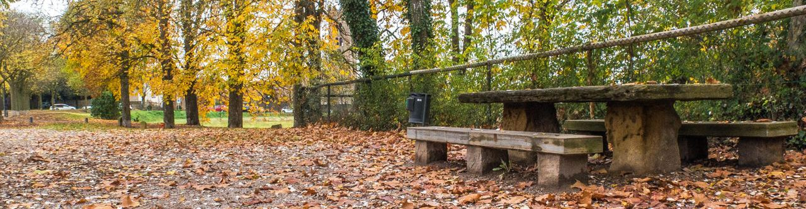

Ruta · Seva
La “Ruta de les fonts de Seva” és una proposta estupenda per recórrer alguns dels racons més atractius del municipi de Seva. Amb les fonts del poble com a fil conductor gaudirem d’un bonic i…